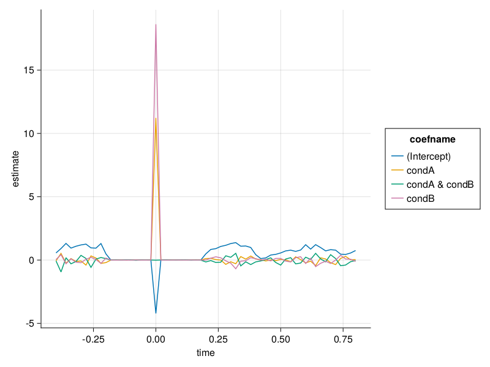
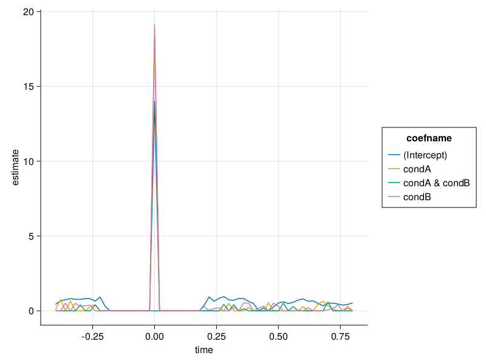

Mass Univariate Linear Mixed Models
using StatsModels, DataFrames,CategoricalArrays
using Unfold
using MixedModels # important to load to activate the UnfoldMixedModelsExtension
using UnfoldMakie,CairoMakie
using DataFrames
include(joinpath(dirname(pathof(Unfold)), "../test/test_utilities.jl") ) # to load dataThis notebook is similar to the Mass Univariate Linear Models (no overlap correction) tutorial , but fits mass-univariate mixed models
Mass Univariate Mixed Models
Again we have 4 steps:
- epoch the data
- specify a formula
- fit a linear model to each time point & channel
- visualize the results.
1. Epoching
The data were simulated in MatLab using the unmixed toolbox (www.unfoldtoolbox.org) with the functionEEG_to_csv.m.
data, evts = loadtestdata("testCase3",dataPath = "../../../test/data/")
data = data.+ 0.1*randn(size(data)) # we have to add minimal noise, else mixed models crashes.
transform!(evts,:subject=>categorical=>:subject); # has to be categorical, else MixedModels.jl complainsThe events dataFrame has an additional column (besides being much taller): subject
first(evts,6)| Row | type | latency | trialnum | condA | condB | stimulus | subject | urlatency |
|---|---|---|---|---|---|---|---|---|
| String3 | Int64 | Int64 | Int64 | Int64 | Int64 | Cat… | Int64 | |
| 1 | sim | 16 | 1 | 0 | 0 | 4 | 1 | 16 |
| 2 | sim | 36 | 2 | 1 | 1 | 10 | 1 | 36 |
| 3 | sim | 51 | 3 | 0 | 1 | 6 | 1 | 51 |
| 4 | sim | 66 | 4 | 0 | 1 | 8 | 1 | 66 |
| 5 | sim | 77 | 5 | 1 | 1 | 9 | 1 | 77 |
| 6 | sim | 91 | 6 | 1 | 0 | 13 | 1 | 91 |
Note how small the data is! Only 12k samples, that is only ~5minutes of recording in total for 25 subjects. More realistic samples quickly take hours to fit.
```@example Main
size(data)
```Now we are ready to epoch the data - same as for the mass univariate, but we have more trials (nsubject more)
data_r = reshape(data,(1,:))
# cut the data into epochs
data_epochs,times = Unfold.epoch(data=data_r,tbl=evts,τ=(-0.4,0.8),sfreq=50);
# missing or partially missing epochs are currenlty _only_ supported for non-mixed models!
evts,data_epochs = Unfold.dropMissingEpochs(evts,data_epochs);(1, 1, 7050)2. Specify the formula
We define the formula. Importantly we need to specify a random effect. We are using zerocorr to speed up the calculation and show off that we can use it.
f = @formula 0~1+condA*condB+zerocorr(1+condA*condB|subject);3. Fit the model
We can now run the LinearMixedModel on each time point
m = fit(UnfoldModel,f,evts,data_epochs,times)
Progress: 3%|█▍ | ETA: 0:00:20
channel: 1
time: 2
Progress: 39%|████████████████▏ | ETA: 0:00:01
channel: 1
time: 24
Progress: 77%|███████████████████████████████▋ | ETA: 0:00:00
channel: 1
time: 47
Progress: 100%|█████████████████████████████████████████| Time: 0:00:00
channel: 1
time: 614. Visualize results
Let's start with the fixed Effects
results = coeftable(m)
res_fixef = results[isnothing.(results.group),:]
plot_erp(res_fixef)
We see the condition effects and some residual overlap activity in the fixed effects
And now the random effect results
res_ranef = results[results.group.==:subject,:]
plot_erp(res_ranef)
The random effects are very high in areas where we simulated overlap. (i.e. <-0.1 and >0.2)
Statistics
Check out the LMM p-value tutorial